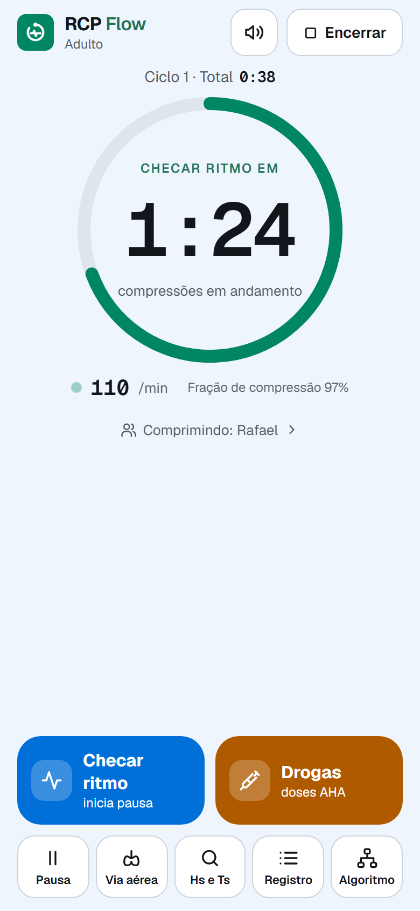
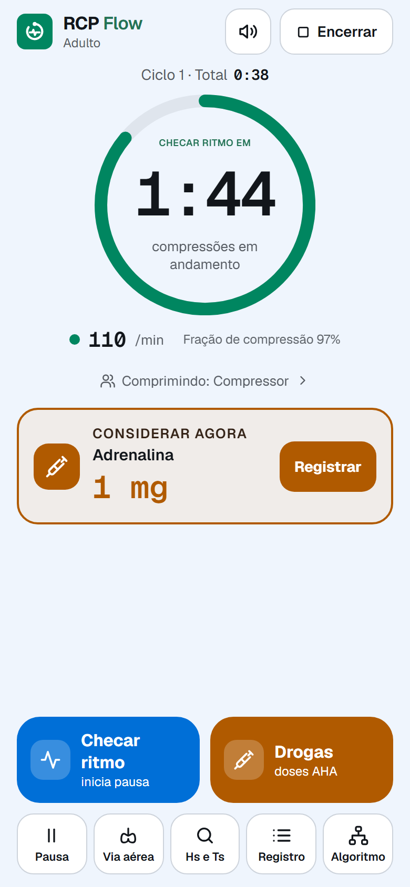
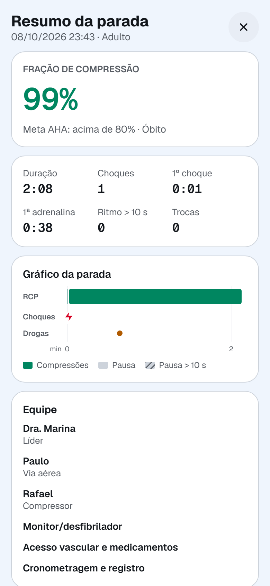
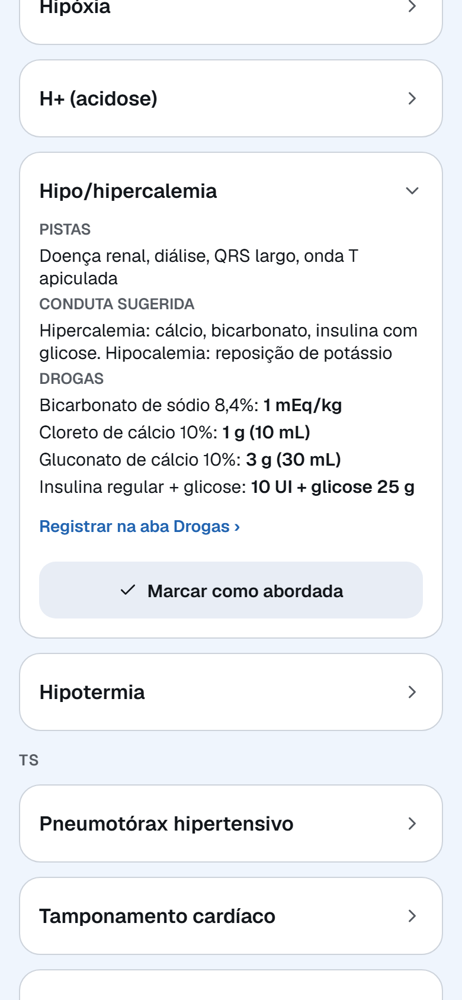

Algoritmo à mão
Esquema do ACLS e do PALS mostrando em que passo a parada está, para conferir o que o app sugere.
Ciclos de 2 minutos, lembretes de ritmo, choque e drogas, e o registro completo da parada, seguindo a AHA 2025.
A equipe toca em botões grandes; o app cuida do tempo, dos lembretes e da anotação de cada evento.
O cronômetro do ciclo começa e o metrônomo marca o ritmo das compressões, de 100 a 120 por minuto.
Ao marcar um ritmo chocável, aparece o botão de choque com a energia já preenchida. Na linha reta, o app pede para conferir cabos, ganho e derivação.
Registrado com um toque. Tocou por engano? Dá para desfazer em até 15 segundos.
O app avisa, com som e voz, quando considerar cada droga, com a dose padrão. No pediátrico, calculada pelo peso.
O anel avisa a próxima checagem e sugere quem assume as compressões, pelo rodízio da equipe.
Fração de compressão, gráfico das pausas, choques e drogas, relatório em PDF e resumo em texto para o WhatsApp.



Do treino com manequim ao relatório para o debriefing.
Esquema do ACLS e do PALS mostrando em que passo a parada está, para conferir o que o app sugere.
Causas reversíveis com pistas, condutas e as drogas de cada uma, com a dose do paciente.

O RCP Flow não tem cadastro nem login e não envia nada para servidores. Não pede nome nem documento do paciente. O relatório só sai do aparelho quando você decide compartilhar.
Ler a política de privacidadeEnquanto o app não chega às lojas, use a versão para navegador e coloque o ícone na tela de início.
Baixar o guia ilustrado em PDFCom as telas do iPhone e do Android e um QR code do endereço.
O RCP Flow é uma ferramenta de apoio e registro. Os lembretes são sugestões e não substituem o julgamento clínico da equipe.